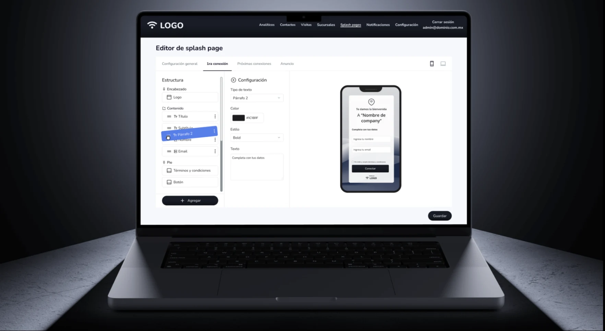
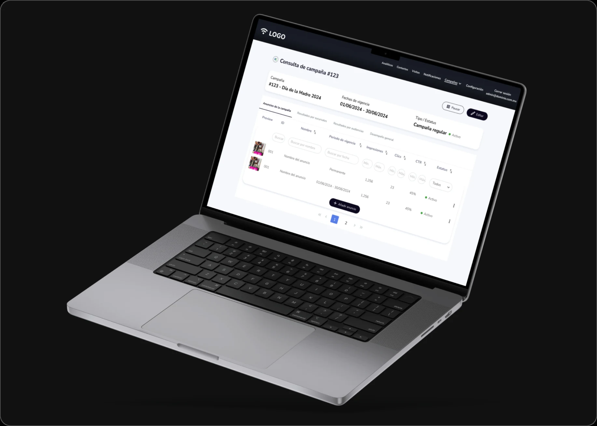
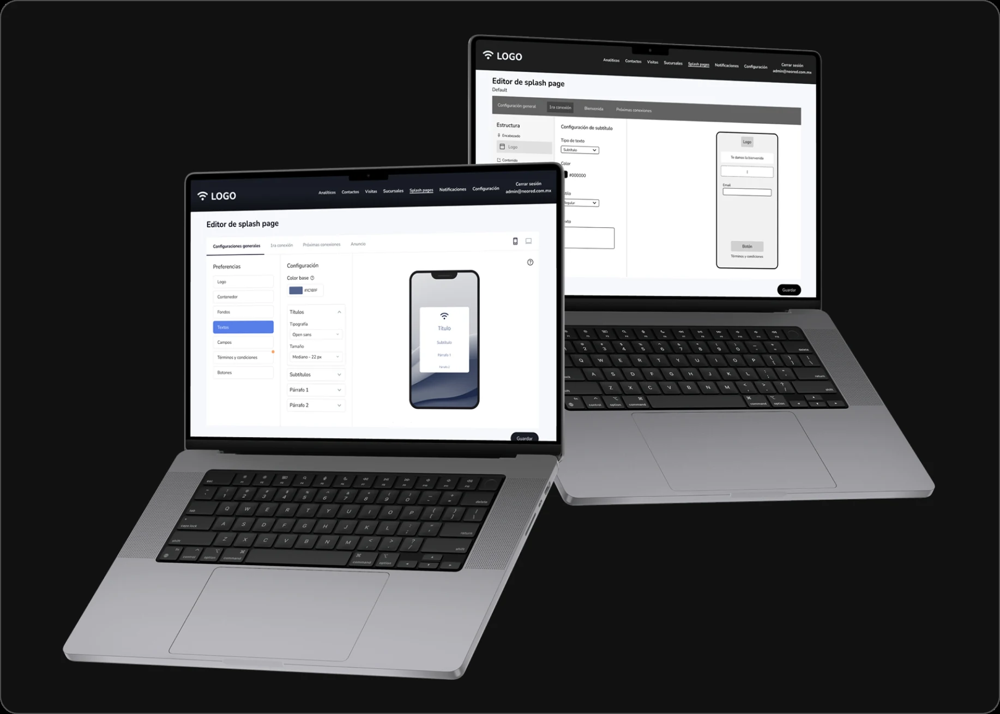
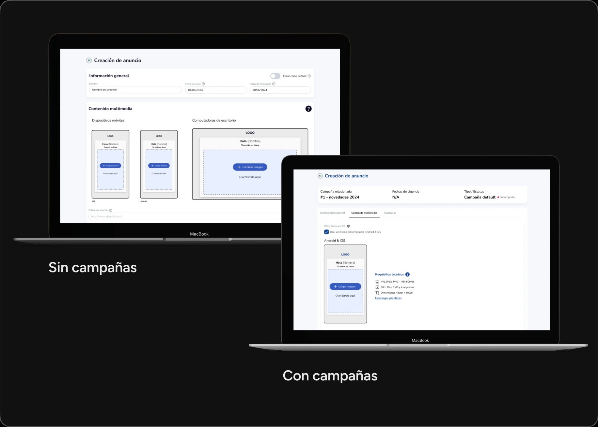
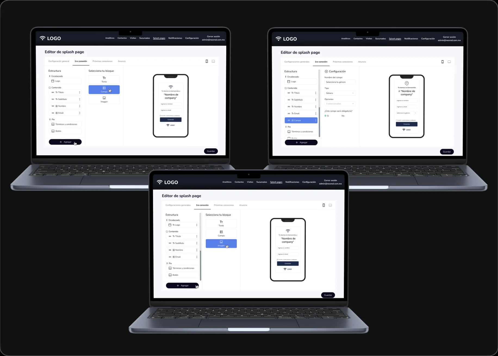
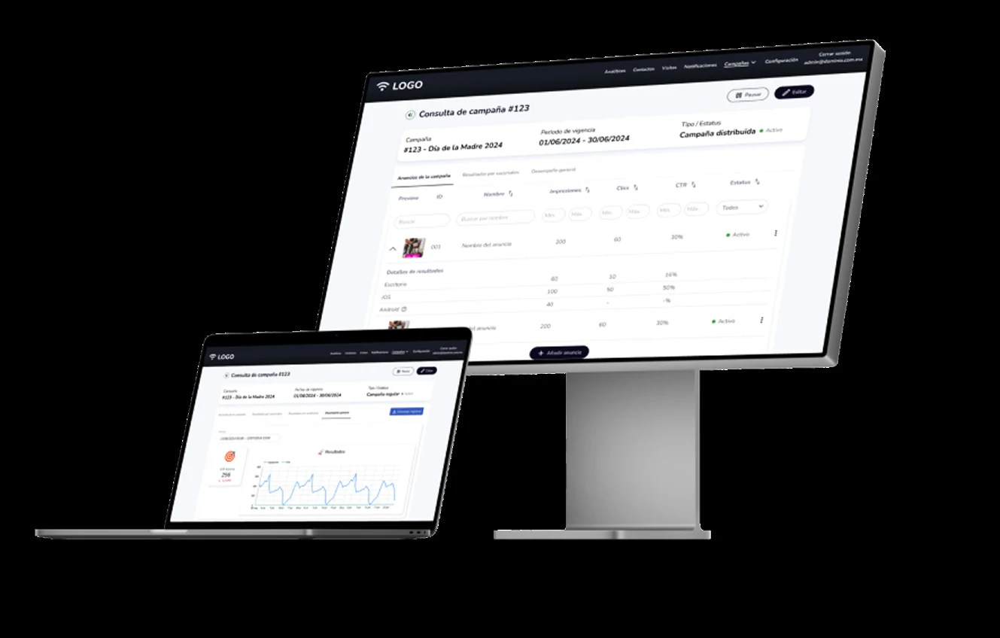

Sistema WiFi Marketing
WiFi en espacios comerciales: captación de datos y experiencia de conexión.
- Sector
- Marketing digital · Espacios comerciales
- Timeline
- Jun 2024 – Oct 2024
- Rol
- UX/UI Designer
- Skills
- Auditoría · Benchmark · UX/UI Design

⛔ Problema
El proyecto estaba en constante evolución: se buscaba ofrecer cada vez más funciones y lograr que fuera un software flexible, capaz de acompañar modelos de negocio muy distintos entre sí.
Objetivo: dar mayor control a los usuarios para crear campañas publicitarias, diseñar formularios y gestionar las interacciones.

🛠️ Proceso
Adopté una metodología ágil y colaborativa, enfocada en la validación continua.
-
01
Descubrimiento y definición
Arrancó con workshops directos con el cliente para alinear la visión, y una exploración conceptual de las soluciones posibles. -
02
Diseño e iteración
El proceso se movió de baja a alta fidelidad, con crosschecks periódicos con el equipo de desarrollo para validar la viabilidad técnica. -
03
Validación
El ciclo cerró con demos periódicas con clientes, para asegurar que el sistema cumpliera con sus necesidades.

💡 Solución
A. Módulo de campañas publicitarias
Diseñé una función intuitiva para gestionar anuncios, conectando estrategias publicitarias con objetivos y públicos específicos. Resolvió la falta de flexibilidad con un sistema robusto, adaptable a las necesidades de cada negocio.

B. Constructor modular de splash pages
Una experiencia modular para configurar las splash pages: un editor basado en bloques y paneles donde se personalizan contenido y estilos. Así el diseño se alinea con la identidad de marca de cada cliente, con herramientas de edición que no exigen conocimiento técnico.

💥 Impacto
-
01
Optimización de procesos
Mejoró la navegación y los procesos del sistema preexistente. -
02
Escalabilidad
Un sistema adaptable a distintos modelos empresariales. -
03
Inteligencia de datos
Se habilitó el análisis detallado de datos para maximizar los resultados de las campañas.

💭 Mi aprendizaje
El proyecto me permitió profundizar en el balance crítico entre funcionalidad y necesidad de negocio. Pude poner en práctica habilidades avanzadas de conceptualización y análisis dentro de un flujo de trabajo ágil.